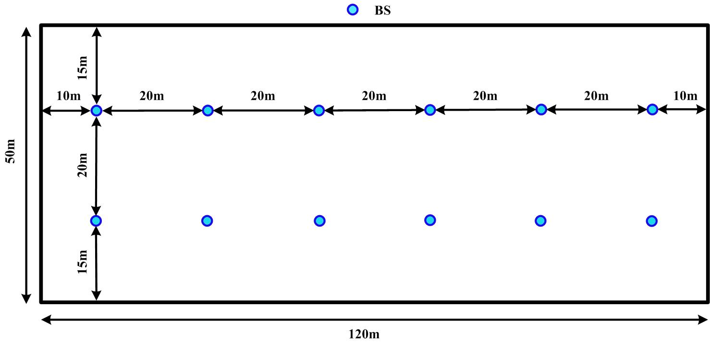

Technical Specification Group Radio Access Network;
NR;
Study on International Mobile Telecommunications (IMT) parameters for
6.425-7.025GHz, 7.025-7.125GHz and 10.0-10.5 GHz
(Release 17)
The present document has been developed within the 3rd
Generation Partnership Project (3GPP TM) and may be further
elaborated for the purposes of 3GPP.
The present document has not been subject to any approval process by the
3GPP Organizational Partners and shall not be implemented.
This Specification is provided for future development work within 3GPP
only. The Organizational Partners accept no liability for any use of
this Specification.
Specifications and Reports for implementation of the 3GPP TM
system should be obtained via the 3GPP Organizational Partners'
Publications Offices.
3GPP
Postal address
3GPP support office address
650 Route des Lucioles - Sophia Antipolis
Valbonne - FRANCE
Tel.: +33 4 92 94 42 00 Fax: +33 4 93 65 47 16
Internet
http://www.3gpp.org
Copyright
Notification
No part may be reproduced except as authorized by written
permission.
The copyright and the foregoing restriction extend to reproduction in
all media.
UMTS™ is a Trade Mark of ETSI registered for the benefit of its
members
3GPP™ is a Trade Mark of ETSI registered for the benefit of its
Members and of the 3GPP Organizational Partners
LTE™ is a Trade Mark of ETSI registered for the benefit of its Members
and of the 3GPP Organizational Partners
GSM® and the GSM logo are registered and owned by the GSM
Association
This Technical Report has been produced by the 3rd Generation
Partnership Project (3GPP).
The contents of the present document are subject to continuing work
within the TSG and may change following formal TSG approval. Should the
TSG modify the contents of the present document, it will be re-released
by the TSG with an identifying change of release date and an increase in
version number as follows:
Version x.y.z
where:
x the first digit:
1 presented to TSG for information;
2 presented to TSG for approval;
3 or greater indicates TSG approved document under change
control.
y the second digit is incremented for all changes of substance, i.e.
technical enhancements, corrections, updates, etc.
z the third digit is incremented when editorial only changes have
been incorporated in the document.
In the present document, modal verbs have the following meanings:
shall indicates a mandatory requirement to do
something
shall not indicates an interdiction (prohibition) to
do something
The constructions "shall" and "shall not" are confined to the context
of normative provisions, and do not appear in Technical Reports.
The constructions "must" and "must not" are not used as substitutes
for "shall" and "shall not". Their use is avoided insofar as possible,
and they are not used in a normative context except in a direct citation
from an external, referenced, non-3GPP document, or so as to maintain
continuity of style when extending or modifying the provisions of such a
referenced document.
should indicates a recommendation to do
something
should not indicates a recommendation not to do
something
may indicates permission to do something
need not indicates permission not to do
something
The construction "may not" is ambiguous and is not used in normative
elements. The unambiguous constructions "might not" or "shall not" are
used instead, depending upon the meaning intended.
can indicates that something is possible
cannot indicates that something is impossible
The constructions "can" and "cannot" are not substitutes for "may"
and "need not".
will indicates that something is certain or expected
to happen as a result of action taken by an agency the behaviour of
which is outside the scope of the present document
will not indicates that something is certain or
expected not to happen as a result of action taken by an agency the
behaviour of which is outside the scope of the present document
might indicates a likelihood that something will
happen as a result of action taken by some agency the behaviour of which
is outside the scope of the present document
might not indicates a likelihood that something will
not happen as a result of action taken by some agency the behaviour of
which is outside the scope of the present document
In addition:
is (or any other verb in the indicative mood)
indicates a statement of fact
is not (or any other negative verb in the indicative
mood) indicates a statement of fact
The constructions "is" and "is not" do not indicate requirements.
1 Scope
The present document is a technical report for the study item on IMT
parameters for 6.425-7.025GHz, 7.025-7.125GHz and 10.0-10.5GHz [2],
covering the study on transmitter and receiver characteristics for both
NR BS and NR UE, and related parameters for answering requests from
ITU-R WP5D.
2 References
The following documents contain provisions which, through reference
in this text, constitute provisions of the present document.
- References are either specific (identified by date of publication,
edition number, version number, etc.) or non‑specific.
- For a specific reference, subsequent revisions do not apply.
- For a non-specific reference, the latest version applies. In the
case of a reference to a 3GPP document (including a GSM document), a
non-specific reference implicitly refers to the latest version of that
document in the same Release as the present document.
[1] 3GPP TR 21.905: "Vocabulary for 3GPP Specifications".
[2] RP-200513: "Study on IMT parameters for 6.425-7.025GHz,
7.025-7.125GHz and 10.0-10.5GHz"
[3] 3GPP TS 38.104: "NR; Base Station (BS) radio transmission and
reception"
[4] 3GPP TS 38.101-1: "NR; User Equipment (UE) radio transmission and
reception; Part 1: Range 1 Standalone"
[5] ITU-R Recommendation SM.329: "Unwanted emissions in the spurious
domain"
[6] ERC Recommendation 74-01, "Unwanted emissions in the spurious
domain"
3 Definitions of
terms, symbols and abbreviations
3.1 Terms
For the purposes of the present document, the terms given in 3GPP
TR 21.905 [1] and the following apply. A term defined in the present
document takes precedence over the definition of the same term, if any,
in 3GPP TR 21.905 [1].
array element: subdivision of a passive antenna
array, consisting of a single radiating element or a group of
radiating elements, with a fixed radiation pattern
beamwidth: beam which has a half-power contour that
is essentially elliptical, the half-power beamwidths in the two pattern
cuts that respectively contain the major and minor axis of the
ellipse
front-to-back ratio: ratio of maximum directivity of
an antenna to its directivity in a specified rearward direction
gain: ratio of the radiation intensity, in a given
direction, to the radiation intensity that would be obtained if the
power accepted by the antenna were radiated isotropically
NOTE: If the direction is not specified, the direction of maximum
radiation intensity is implied.
3.2 Symbols
For the purposes of the present document, the following symbols
apply:
A Peak normalized array element pattern in dB
AA Composite antenna array pattern in
dBi
AEArray element pattern in dBi
Am Front to back ratio in dB
dh Horizontal element separation in meters
dv Vertical element separation in meters
GE,max Array element peak gain in dBi
SLAv Side lobe suppression in dB
ϕ3dB Horizonal half power beamwidth
θ3dB Vertical half power beamwidth
θetilt Electrical down-tilt angle in degrees
(defined from antenna array normal and downwards)
ϕescan Electrical scan angle in degrees
ϕ Horizontal angle (defined between -180° and 180°).
θ Vertical angle of the signal direction (defined between
-0° and 180°,90° represents the direction perpendicular to the antenna
array
NRB Transmission bandwidth configuration, expressed in
resource blocks
3.3 Abbreviations
For the purposes of the present document, the abbreviations given in
3GPP TR 21.905 [1] and the following apply. An abbreviation defined in
the present document takes precedence over the definition of the same
abbreviation, if any, in 3GPP TR 21.905 [1].
AAS Active Antenna System
ACLR Adjacent Channel Leakage Ratio
ACS Adjacent Channel Selectivity
AWGN Additive White Gaussian Noise
BS Base Station
BW Bandwidth
FDD Frequency Division Duplex
FR Frequency Range
FRC Fixed Reference Channel
ITU‑R Radiocommunication Sector of the International
Telecommunication Union
LA Local Area
LOS Line-Of-Sight
MR Medium Range
NR New Radio
OTA Over The Air
O-to-I Outdoor-to-Indoor
RB Resource Block
RF Radio Frequency
SCS Sub-Carrier Spacing
TDD Time division Duplex
WA Wide Area
4 Co-existence study
4.1 Co-existence simulation
scenarios
Table 4.1-1 summarizes the proposed scenarios to be considered for
6.425-7.125GHz and 10.0-10.5 GHz.
Table 4.1-1: Summary of considered scenario
No.
Usage scenario
Aggressor
Victim
Direction
Simulation frequency
Deployment Scenario
Note
1
eMBB
NR, 100MHz
NR, 100MHz
DL to DL
7 GHz
Urban macro
2
eMBB
NR, 100MHz
NR, 100MHz
DL to DL
7 GHz
Indoor hotspot
3
eMBB
NR, 100MHz
NR, 100MHz
DL to DL
7 GHz
Dense urban
Down-prioritized
4
eMBB
NR, 100MHz
NR, 100MHz
UL to UL
7 GHz
Urban macro
5
eMBB
NR, 100MHz
NR, 100MHz
UL to UL
7 GHz
Indoor hotspot
6
eMBB
NR, 100MHz
NR, 100MHz
UL to UL
7 GHz
Dense urban
Down-prioritized
7
eMBB
NR, 100MHz
NR, 100MHz
DL to DL
10 GHz
Urban macro
8
eMBB
NR, 100MHz
NR, 100MHz
DL to DL
10 GHz
Indoor hotspot
9
eMBB
NR, 100MHz
NR, 100MHz
DL to DL
10 GHz
Dense urban
Down-prioritized
10
eMBB
NR, 100MHz
NR, 100MHz
UL to UL
10 GHz
Urban macro
11
eMBB
NR, 100MHz
NR, 100MHz
UL to UL
10 GHz
Indoor hotspot
12
eMBB
NR, 100MHz
NR, 100MHz
UL to UL
10 GHz
Dense urban
Down-prioritized
4.2 Co-existence simulation
assumption
4.2.1 Network layout model
4.2.1.1 Urban macro
Details on urban macro network layout model are listed in Tables
4.2.1.1-1 and 4.2.1.1-2.
Table 4.2.1.1-1: Single operator layout for urban macro
Parameters
Values
Remark
Network layout
hexagonal grid, 19 macro sites, 3 sectors per site with wrap
around
Inter-site distance
0.45 km (urban) (Note 1)
0.9 km (suburban)
Based on cell range:
0.3 km (urban)
0.6 km (suburban)
BS antenna height
20 m (urban)
25 m (suburban)
UE location
Outdoor/indoor
Outdoor and indoor
Indoor UE ratio
20%
Low/high penetration loss ratio
50% low loss, 50% high loss
LOS/NLOS
LOS and NLOS
UE antenna height
Same as 3D-UMa in TR 36.873
UE distribution (horizontal)
Uniform
Minimum BS - UE distance (2D)
35 m
Channel model
UMa
Shadowing correlation
Between cells: 1.0
Between sites: 0.5
Note: Results with 0.4 km ISD at 10 GHz can also be
provided if simulation results show 5%-tile throughput cannot be
achieved with 0.45 km ISD at 10 GHz.
Table 4.2.1.1-2: Multi operators layout for urban macro
RAN4 has long been using un-coordinated operation in below 6 GHz
coexistence simulation
Figure 4.2.1.1-1: Coordinated operation: each network with
co-location of sites
Figure 4.2.1.1-2: Uncoordinated operation: second network’s sites are
located at the first network’s cell edge
4.2.1.2 Dense urban
It is agreed to down-prioritized the dense urban scenario in this
coexistence study, because it has the least demanding ACIR requirements
among the three simulated scenarios in TR 38.803.
4.2.1.3 Indoor
Details on indoor network layout model are listed in Tables 4.2.1.3-1
and 4.2.1.3-2.
Table 4.2.1.3-1: Single operator layout for indoor
Parameters
Values
Remark
Network layout
50 m x 120 m, 12 BSs
Inter-site distance
20m
BS antenna height
3 m
ceiling
UE location
Outdoor/indoor
Indoor
LOS/NLOS
LOS and NLOS
UE antenna height
1 m
UE distribution (horizontal)
Uniform
Minimum BS - UE distance (2D)
0 m
Channel model
Indoor Office
Shadowing correlation
NA

Figure 4.2.1.3-1: Network layout for indoor
Table 4.2.1.3-2: Multi operators layout for indoor
Parameters
Values
Remark
Multi operator layout
Coordinated operation (0% Grid Shift)
4.2.2 Propagation model
4.2.2.1 Path loss
The pathloss models are summarized in Table 4.2.2.1-1 and the
distance definitions are indicated in Figures 4.2.2.1-1 and 4.2.2.1-2.
Note that the distribution of the shadow fading is log-normal, and its
standard deviation for each scenario is given in Table 4.2.2.1-1.
Figure 4.2.2.1-1: Definition of d2D and
d3D for outdoor UTs
Figure 4.2.2.1-2: Definition of d2D-out,
d2D-in and d3D-out,
d3D-in for indoor UTs
Note 1: Breakpoint distance d'BP
= 4 h'BSh'UTfc/c, where fc is the
centre frequency in Hz, c = 3.0×108 m/s is the
propagation velocity in free space, and h'BS and
h'UT are the effective antenna heights at the BS and
the UT, respectively. The effective antenna heights
h'BS and h'UT are computed as
follows: h'BS = hBS –
hE, h'UT =
hUT – hE, where
hBS and hUT are the actual
antenna heights, and hE is the effective environment height.
For UMi hE = 1.0m. For UMa hE=1m
with a probability equal to 1/(1+C(d2D,
hUT)) and chosen from a discrete uniform
distribution uniform(12,15,…,(hUT-1.5)) otherwise.
With C(d2D, hUT) given by
Note that hE depends on d2D
and hUT and thus needs to be independently
determined for every link between BS sites and UTs. A BS site may be a
single BS or multiple co-located BSs.
Note 2: The applicable frequency range of the PL formula in this
table is 0.5 < fc < fH
GHz, where fH = 30 GHz for RMa and
fH = 100 GHz for all the other scenarios. It is
noted that RMa pathloss model for >7 GHz is validated based on a
single measurement campaign conducted at 24 GHz.
Note 3: UMa NLOS pathloss is from TR36.873 with simplified format and
PLUMa-LOS = Pathloss of UMa LOS outdoor scenario.
Note 4: fc denotes the center frequency
normalized by 1GHz, all distance related values are normalized by 1m,
unless it is stated otherwise.
4.2.2.2 LOS probability
The Line-Of-Sight (LOS) probabilities are given in Table
4.2.2.2-1.
where \(\text{P}\text{L}_{b}\) is
the basic outdoor path loss given in clause 4.2.2.1, where \(d_{\text{3D}}\) is replaced by \(d_{\text{3D} - \text{out}} + d_{\text{3D} -
\text{in}}\) . \(\text{P}\text{L}_{\text{tw}}\) is the
building penetration loss through the external wall, \(\text{P}\text{L}_{\text{in}}\) is the
inside loss dependent on the depth into the building, and
σP is the standard deviation for the penetration
loss.
\(\text{P}\text{L}_{\text{tw}}\) is
characterized as:
\(\text{P}\text{L}_{npi}\) is an
additional loss is added to the external wall loss to account for
non-perpendicular incidence; \(\ L_{material\_ i} = a_{material\_ i} +
b_{material\_ i} \cdot f\), is the penetration loss of material
i, example values of which can be found in Table 4.2.2.3-1;
\(p_{i}\) is proportion of
i-th materials, where \(\ \sum_{i = 1}^{N}p_{i} = 1\); and
N is the number of materials.
Table 4.2.2.3-1: Material penetration losses
Material
Penetration loss [dB]
Standard multi-pane glass
\[L_{\text{glass}} = 2 +
0.2f\]
IRR glass
\[L_{\text{IIRglass}} = 23 +
0.3f\]
Concrete
\[L_{\text{concrete}} = 5 +
4f\]
Wood
\[L_{\text{wood}} = 4.85 +
0.12f\]
Note: f is in GHz.
Table 4.2.2.3-2 gives \(\text{P}\text{L}_{\text{tw}}\), \(\text{P}\text{L}_{\text{in}}\) and
σP for two O2I penetration loss models. The O2I
penetration is UT-specifically generated and is added to the SF
realization in the log domain.
Table 4.2.2.3-2: O2I building penetration loss model
\(d_{\text{2D} - \text{in}}\) is
minimum of two independently generated uniformly distributed variables
between 0 and 25 m for UMa and UMi-Street Canyon, and between 0 and 10 m
for RMa. \(d_{\text{2D} - \text{in}}\)
should be UT-specifically generated.
Both low-loss and high-loss models are applicable to UMa and
UMi-Street Canyon.
Only the low-loss model is applicable to RMa.
Only the high-loss model is applicable to InF.
4.2.2.3.2 O-to-I car penetration
loss
The pathloss incorporating O2I car penetration loss is modelled as in
the following:
where \(\text{P}\text{L}_{b}\) is
the basic outdoor path loss given in clause 4.2.2.1. μ = 9, and
σP = 5. The car penetration loss should be
UT-specifically generated. Optionally, for metallized car windows,
μ = 20 can be used. The O2I car penetration loss models are
applicable for at least 0.6 - 60 GHz.
4.2.3 Antenna and
beam forming pattern modelling
The BS antenna is modelled as described in clause 8.1.1 using
parameters for different BS deployments listed in clause 8.1.2.
The UE antenna is modelled as described in clause 8.2 using isotropic
antenna pattern.
4.2.4 Transmission power
control model
For downlink scenario, no power control scheme is applied.
For uplink scenario, TPC model specified in clause 9.1 TR 36.942 is
applied with following parameters.
- CLx-ile = 88 + 10*log10(200/X) + 11 – Y, where X is UL
transmission BW (MHz) and Y is the BS noise figure
- γ = 1
4.2.5 Received power model
The received power in downlink and uplink scenarios is defined as
below:
RX_PWR = TX_PWR – Path loss + G_TX + G_RX
where:
- RX_PWR is the received power
- TX_PWR is the transmitted power
- G_TX is the transmitter antenna gain (directional array gain)
- G_RX is the receiver antenna gain (directional array gain).
4.2.6 ACLR and ACS modelling
For DL it seems reasonable from the perspective of simulating worst
case scenarios that we assume BS ACLR is modelled as flat in space, and
the UE ACS can be modelled flat in space.
If this assumption is for DL, then the similar assumption could be
made for the UL because:
- UE has a much small number of antennas, thus the effect of
directivity should be smaller for ACLR (or the adjacent channel
interference). It can also be reasonably assumed that the UE ACLR will
play a dominant role than the BS ACS in the adjacent channel
interference.
- Again, BS ACS flat in space might mean worse coexistence
performance than actual performance because BS has better capability of
steering its receive antennas to suppress interference.
1 user scheduling is baseline assumption for coexistence evaluation
and the two step ACLR model shown in Table 4.2.6-1 could be used for 3
uplink user scheduling simulation, where a UE occupies a smaller
bandwidth than the channel bandwidth for transmission, to avoid overly
estimating interference, similar as done in E-UTRA coexistence study (as
recorded in TR 36.942).
Table 4.2.6-1: Uplink ACIR value
Frequency offset between aggressor (91RBs) and victim (91RBs)
ACIR value
0 - 90 RBs
30 + X
91 - 181RBs
43 + X
> 181RBs
43+ X
Therefore, it is assumed that both ACLR (or the adjacent channel
interference) and ACS are flat in both space and frequency. The ACIR
model can be express as:
(assuming ACLR, ACS and ACIR to be linear).
4.2.7 Link level
performance for 5G NR coexistence
The throughput of a modem with link adaptation can be approximated by
an attenuated and truncated form of the Shannon bound. (The Shannon
bound represents the maximum theoretical throughput than can be achieved
over an AWGN channel for a given SNIR). The following equations
approximate the throughput over a channel with a given SNIR, when using
link adaptation:
The parameters α, SNIRMIN and SNIRMAX can be
chosen to represent different modem implementations and link conditions.
The parameters proposed in Table 4.2.7-1 represent a baseline case,
which assumes:
- 1:1 antenna configuration
- AWGN channel model
- Link Adaptation (see Table 4.2.7-1 for details of the highest and
lowest rate codes)
- No HARQ
Table 4.2.7-1: Parameters describing baseline Link Level performance
for 5G NR
Parameter
DL
UL
Notes
α, attenuation
0.6
0.4
Represents implementation losses
SNIRMIN, dB
-10
-10
Based on QPSK, 1/8 rate (DL) & 1/5 rate (UL)
SNIRMAX, dB
30
22
Based on 256QAM 0.93(DL) & 64QAM 0.93 (UL)
Note that the parameters proposed in Table 4.2.7-1 are targeted for
eMBB coexistence scenario.
4.2.8 Other simulation
parameters
Table 4.2.8-1: Other simulation parameters
Parameters
Indoor
Urban macro
Dense urban
Carrier frequency
7 GHz, 10 GHz
7 GHz, 10 GHz
Down-prioritized
Channel bandwidth
100 MHz
100 MHz
Down-prioritized
Scheduled channel bandwidth per UE (DL)
98.28 MHz
98.28 MHz
Down-prioritized
Scheduled channel bandwidth per UE (UL)
98.28 MHz (1 user, Note 4)
32.76 MHz (3 user)
98.28 MHz (1 user, Note 4)
32.76 MHz (3 user)
Down-prioritized
The number of active UE (DL) (Note 1)
1
1
Down-prioritized
The number of active UE (UL) (Note 1)
1 or 3
1 or 3
Down-prioritized
Traffic model
Full buffer
Full buffer
Down-prioritized
DL power control
NO
NO
Down-prioritized
UL power control
YES
YES
Down-prioritized
BS max TX power in dBm
24
43 (Note 3)
Down-prioritized
UE max TX power in dBm
23 or 20 (Note 2)
23 or 20 (Note 2)
Down-prioritized
UE min TX power in dBm
-33
-33
Down-prioritized
BS Noise figure in dB
14 (@7 GHz)
15 (@10 GHz)
6 (@7 GHz)
7 (@10 GHz)
Down-prioritized
UE Noise figure in dB
9 or 13 (Note 5)
9 or 13 (Note 5)
Down-prioritized
Handover margin
3 dB
3 dB
Down-prioritized
Note 1 Same as the number of BS beam(s);
Note 2: 20 dBm as optional case where CLx-ile should be
reduced by 3 dB;
Note 3: BS max TX power is defined per polarization;
Note 4: 1 user scheduling is a baseline assumption for coexistence
evaluation;
Note 5: NF of 9 dB is a baseline assumption and NF of 13 dB is as
optional case.
4.2.9 Co-existence
simulation methodology
Adopt following simulation steps.
1. Aggressor and victim network are generated.
- UEs are distributed randomly across the network.
2. UE associations: UEs are associated to base station based on
coupling loss.
- Associations are made assuming a single element at BS and UE with
isotropic antenna.
3. Once association is done, round robin scheduling is used. BF
weights are adjusted to point to the LOS direction between BS-UE. This
is done for both victim and aggressor networks.
4. Throughput is computed in the victim systems without considering
ACI as below:
- \({Thput}_{NO\ ACI}\lbrack bpshz\rbrack =
f\left( {SINR}_{ICI} \right) = f\left( \frac{S}{N + I_{ICI}}
\right)\), where \(I_{ICI}\) is
the inter-cell interference.
5. Throughput is computed considering ACI as below:
- \({Thput}_{ACI}\lbrack bpshz\rbrack =
f\left( {SINR}_{ICI + ACI} \right) = f\left( \frac{S}{N + I_{ICI} +
I_{ACI}} \right)\), where \(I_{ACI}\) is the adjacent channel
interference.
6. RF parameters are determined based on the degradation cause by ACI
as below:
For Urban macro scenarios, simulation results for DL throughput loss
with baseline assumption ACLR = 45 dBc at BS and ACS = 33 dBc at UE are
summarized in Table 4.3.1.1-1/2/3/4.
Table 4.3.1.1-1: DL throughput loss of victim UE for 6425 – 7125 MHz
[Relative ACIR value]
Company
Simulation scenarios
Throughput loss
Relative ACIR offset
0
-1
-2
-3
-4
-5
ZTE
AAS based BS
Average throughput loss in % (7 GHz)
1.65
1.89
2.10
2.33
2.63
2.99
5%-tile throughput loss in % (7 GHz)
4.39
5.18
5.98
7.07
7.87
9.06
Nokia
AAS based BS
Average throughput loss in % (7 GHz)
1.11
1.28
1.48
1.70
1.94
2.21
5%-tile throughput loss in % (7 GHz)
6.22
6.23
6.24
7.51
8.99
9.23
Huawei
AAS based BS
Average throughput loss in % (7 GHz)
1.04
1.39
1.47
1.77
2.30
2.39
5%-tile throughput loss in % (7 GHz)
3.00
4.63
4.96
6.37
6.78
7.16
Table 4.3.1.1-1a: DL throughput loss of victim UE for 6425 – 7125 MHz
[Absolute ACIR value]
ACIR (dB)
23
24
25
26
27
28
29
30
31
32
33
Ericsson
Throughput lost at Average
2.7
2.4
2.1
1.8
1.6
1.4
1.2
1.0
0.9
0.8
0.7
Throughput lost at 5%-tile
13.1
10.6
10.0
8.3
6.6
6.1
5.5
4.7
3.1
2.2
2.1
CATT
Throughput lost at Average
2.945446
2.615785
2.318919
2.050108
1.808206
1.592518
1.399160
1.226961
1.073971
0.936971
0.814444
Throughput lost at 5%-tile
11.345302
10.038643
8.745891
7.593149
6.594121
5.813514
5.023313
4.235969
3.589495
3.063706
2.576903
Qualcomm
Throughput lost at Average
3.0285
2.6700
2.3630
2.0876
1.8414
1.6318
1.4200
Throughput lost at 5%-tile
12.3347
10.6516
9.2041
7.9086
6.7639
5.8122
4.9061
Table 4.3.1.1-2: DL throughput loss of victim UE for 10 - 10.5 GHz
[Relative ACIR value]
Company
Simulation scenarios
Throughput loss
Relative ACIR offset
0
-1
-2
-3
-4
-5
ZTE
AAS based BS
Average throughput loss in % (7 GHz)
1.52
1.68
1.93
2.12
2.31
2.62
5%-tile throughput loss in % (7 GHz)
3.36
3.79
4.79
5.78
6.41
7.63
Nokia
AAS based BS
Average throughput loss in % (7 GHz)
1.03
1.20
1.38
1.60
1.83
2.09
5%-tile throughput loss in % (7 GHz)
4.38
4.38
4.86%
5.23
6.01
7.40
Huawei
AAS based BS
Average throughput loss in % (7 GHz)
1.21
1.22
1.30%
1.72
1.99
2.44
5%-tile throughput loss in % (7 GHz)
3.04
3.33
4.14%
5.06
6.41
8.67
Table 4.3.1.1-2a: DL throughput loss of victim UE for 10-10.5GHz
[Absolute ACIR value]
ACIR (dB)
23
24
25
26
27
28
29
30
31
32
33
Ericsson
Throughput lost at Average
2.1
1.9
1.7
1.4
1.3
1.1
0.9
0.8
0.7
0.6
0.5
Throughput lost at 5%-tile
11.8
10.0
9.6
9.4
7.8
6.3
4.8
4.7
4.2
3.9
3.5
CATT
Throughput lost at Average
2.874567
2.547846
2.252212
1.986030
1.748135
1.537007
1.348903
1.181463
1.032390
0.899829
0.782843
Throughput lost at 5%-tile
9.975828
8.600968
7.468747
6.454207
5.566782
4.750499
4.068893
3.494199
2.988947
2.552896
2.076688
Qualcomm
Throughput lost at Average
2.788
2.4497
2.1611
1.9031
1.6734
1.4787
1.2825
Throughput lost at 5%-tile
11.0936
9.6118
8.3690
7.2691
6.2895
5.4504
4.5726
In addition, coexistence simulation results for UE with NF 13 dB is
summarized in Table 4.3.1.1.3 and 4.3.1.1.4.
Table 4.3.1.1-3: 7 GHz ACIR with 13 dB NF [Qualcomm, R4-2016236]
ACIR [dB]
31
30
29
28
27
26
25
Average throughput loss (7 GHz)
1.3706%
1.5769%
1.7811%
2.0213%
2.2902%
2.5902%
2.9408%
5%-tile throughput loss (7 GHz)
4.5693%
5.4639%
6.3517%
7.4031%
8.5919%
9.9359%
11.5323%
Table 4.3.1.1-4: 10 GHz ACIR with 13 dB NF [Qualcomm, R4-2016236]
ACIR [dB]
31
30
29
28
27
26
25
Average throughput loss (10 GHz)
1.2320%
1.4223%
1.6112%
1.8344%
2.0853%
2.3663%
2.6961%
5%-tile throughput loss (10 GHz)
3.2501%
3.9646%
4.7371%
5.6903%
6.7960%
8.0620%
9.5717%
Based on the above simulation results, the required DL ACIR for 6.425
- 7.125 GHz and 10.0 - 10.5 GHz for urban macro scenarios are in
summarized in Table 4.3.1.1-5.
Table 4.3.1.1-5: DL simulation results for 6.425 - 7.125 GHz and 10.0
- 10.5 GHz
ACIR (dB)
Company
6.425 - 7.125 GHz
10.0 - 10.5 GHz
Urban macro uncoord.
Urban Macro uncoord.
CATT
29.5
28
Nokia
32.7
30.7
Huawei
30.7
29.7
Ericsson
30
29
ZTE
31.7
29.7
Qualcomm
30.9
30.5
Average
30.9
29.6
Average after removing highest and lowest values
30.9
29.5
4.3.1.2 Uplink
For Urban macro scenarios, simulation results for UL throughput loss
with baseline assumption ACLR = 30 dBc at UE and ACS = 46 dBc at BS are
summarized in Table 4.3.1.2-1/2/3/4.
Table 4.3.1.2-1: UL throughput loss of victim BS for 6425-7125MHz
[Relative ACIR value]
Company
Simulation scenarios
Throughput loss
Relative ACIR offset
0
-1
-2
-3
-4
-5
ZTE
AAS based BS
Average throughput loss in % (7 GHz)
0.99
1.09
1.23
1.40
1.55
1.76
5%-tile throughput loss in % (7 GHz)
2.72
2.84
5.28
6.01
6.71
7.20
Nokia
AAS based BS
Average throughput loss in % (7 GHz)
1.08
1.24
1.43
1.65
1.89
2.15
5%-tile throughput loss in % (7 GHz)
1.01
1.68
3.14
3.98
5.76
8.08
Huawei
AAS based BS
Average throughput loss in % (7 GHz)
0.64
0.69
0.69
0.92
1.01
1.07
5%-tile throughput loss in % (7 GHz)
3.8
4.3
5.0
6.2
7.6
8.7
Table 4.3.1.2-1a: UL throughput loss of victim BS for 6425 – 7125 MHz
[Absolute ACIR value]
ACIR (dB)
23
24
25
26
27
28
29
30
31
32
33
Ericsson
Throughput lost at Average
1.5
1.3
1.1
1.0
0.8
0.7
0.6
0.5
0.5
0.4
0.3
Throughput lost at 5%-tile
6.3
6.2
5.5
4.3
2.3
1.6
1.5
1.4
0.8
0.6
0.5
CATT
Throughput lost at Average
1.489821
1.301164
1.134213
0.986689
0.856389
0.741773
0.641199
0.553419
0.476770
0.409968
0.351849
Throughput lost at 5%-tile
7.283069
6.142583
5.227730
4.495608
3.745409
3.051767
2.429319
1.621495
0.968716
0.671695
0.526234
Qualcomm
Throughput lost at Average
1.5
1.2
1.0
0.9
1.0
0.9
0.8
0.6
0.5
Throughput lost at 5%-tile
4.3
3.4
2.4
2.2
2.4
2.2
1.8
1.5
1.3
Table 4.3.1.2-2: UL throughput loss of victim BS for 10 - 10.5 GHz
[Relative ACIR value]
Company
Simulation scenarios
Throughput loss
Relative ACIR offset
0
-1
-2
-3
-4
-5
ZTE
AAS based BS
Average throughput loss in % (7 GHz)
0.79
0.87
1.11
1.23
1.41
1.59
5%-tile throughput loss in % (7 GHz)
N/A
N/A
N/A
N/A
N/A
N/A
Nokia
AAS based BS
Average throughput loss in % (7 GHz)
0.90
1.04
1.21
1.39
1.60
1.84
5%-tile throughput loss in % (7 GHz)
1.98
2.27
2.28
3.90
4.00
6.41
Huawei
AAS based BS
Average throughput loss in % (7 GHz)
0.53
0.59
0.61
0.76
0.91
1.05
5%-tile throughput loss in % (7 GHz)
1.7
2.3
3.3
4.0
5.3
6.4
Table 4.3.1.2-2a: UL throughput loss of victim BS for 10 - 10.5 GHz
[Absolute ACIR value]
ACIR (dB)
23
24
25
26
27
28
29
30
31
32
33
Ericsson
Throughput lost at Average
1.3
1.1
1.0
0.8
0.7
0.6
0.5
0.5
0.4
0.3
0.3
Throughput lost at 5%-tile
3.0
2.3
1.3
1.0
0.8
0.8
0.8
0.8
0.8
0.8
0.2
CATT
Throughput lost at Average
1.535229
1.345764
1.177367
1.027196
0.894277
0.777219
0.673935
0.582684
0.502769
0.432740
0.371237
Throughput lost at 5%-tile
9.496269
7.816610
6.444894
5.273296
4.180206
3.433665
3.082907
2.691289
2.325946
2.024768
1.625941
Qualcomm
Throughput lost at Average
1.5
1.2
1.0
0.9
0.8
0.6
0.5
0.4
Throughput lost at 5%-tile
4.0
3.5
2.9
2.6
2.2
2.0
1.6
1.4
In addition, coexistence simulation results for UE with Tx power 20
dBm is summarized in Table 4.3.1.2.3 and 4.3.1.2.4.
Table 4.3.1.2-3: ACIR results at 7 GHz with 20 dBm UE max Tx power
[Qualcomm, R4-2016601]
ACIR [dB]
30
29
28
27
26
25
24
23
22
Average throughput loss (7 GHz)
0.4%
0.5%
0.6%
0.8%
0.9%
1.0%
1.2%
1.5%
1.8%
5%-tile throughput loss (7 GHz)
0.8%
1.2%
1.6%
1.8%
2.2%
2.5%
3.4%
4.2%
5.0%
Table 4.3.1.2-4: ACIR results at 10 GHz with 20 dBm UE max Tx power
[Qualcomm, R4-2016601]
ACIR [dB]
30
29
28
27
26
25
24
23
22
21
Average throughput loss (10 GHz)
0.3%
0.4%
0.5%
0.6%
0.7%
0.8%
1.0%
1.2%
1.4%
1.6%
5%-tile throughput loss (10 GHz)
0.8%
1.2%
1.4%
1.8%
2.1%
2.3%
3.2%
4.0%
4.7%
5.6%
Based on the above simulation results, the required UL ACIR for
6.425-7.125GHz and 10.0-10.5 GHz for urban macro scenarios are
summarized in Table 4.3.1.2-5.
Table 4.3.1.2-5: UL simulation results for 6.425 - 7.125 GHz and 10.0
- 10.5 GHz
ACIR (dB)
Company
6.425 - 7.125 GHz
10.0 - 10.5 GHz
Urban macro uncoord.
Urban Macro uncoord.
CATT
26
26.2
Nokia
26.9
25.9
Huawei
27.9
25.9
Ericsson
27
23
ZTE
27.9
24.9
Qualcomm
22 (Note 1)
22 / 21.5(Note 1, 2)
Average value
26.3
24.6
Average after removing highest and lowest values
27
24.9
Note 1: 3 UL UEs are assumed, where the same antenna
gain derived by the BS beam forming pattern modelling described in
clause 8.1.1 is used for all UEs.
Note 2: 22 with 23 dBm UE maximum Tx power and 21.5 with 20 dBm UE
maximum Tx power.
4.3.2 Indoor scenario
4.3.2.1 Downlink
For indoor scenarios, simulation results for DL throughput loss with
baseline assumption ACLR = 45 dBc at BS and ACS = 33 dBc at UE are
summarized in Table 4.3.2.1-1/1a/2/2a/3/3a/4/4a.
Table 4.3.2.1-1: DL throughput loss of victim UE for 6425 – 7125 MHz
with omni antenna [Relative ACIR value]
Company
Simulation scenarios
Throughput loss
Relative ACIR offset
0
-1
-2
-3
-4
-5
ZTE
Omni based BS
Average throughput loss in % (7 GHz)
0.1371
0.1724
0.2168
0.2726
0.3425
0.4302
5%-tile throughput loss in % (7 GHz)
0.1429
0.1798
0.2263
0.2847
0.3123
0.3427
Nokia
Omni based BS
Average throughput loss in % (7 GHz)
0.13
0.17
0.21
0.26
0.33
0.41
5%-tile throughput loss in % (7 GHz)
0.07
0.09
0.11
0.14
0.20
0.33
Table 4.3.2.1-1a: DL throughput loss of victim UE for 6425 – 7125 MHz
with omni antenna [Absolute ACIR value]
ACIR (dB)
26
25
24
23
22
21
20
19
18
17
16
Ericsson
Throughput lost at Average
1.8
2.2
2.8
3.5
4.3
5.4
Throughput lost at 5%-tile
0.9
1.1
1.4
1.8
2.3
2.8
CATT
Throughput lost at Average
3.198061
3.945391
4.852136
5.946106
7.258307
Throughput lost at 5%-tile
1.970774
2.470131
3.106864
3.901198
4.918388
Qualcomm
Throughput lost at Average
0.59
0.76
0.9
1.1
1.4
1.8
2.3
2.9
3.6
4.4
5.4
Throughput lost at 5%-tile
0.31
0.39
0.44
0.53
0.66
0.8
1.1
1.4
1.9
2.5
3.1
Table 4.3.2.1-2: DL throughput loss of victim UE for 6425 – 7125 MHz
with AAS antenna [Relative ACIR value]
Company
Simulation scenarios
Throughput loss
Relative ACIR offset
0
-1
-2
-3
-4
-5
ZTE
AAS based BS
Average throughput loss in % (7 GHz)
0.3043
0.3817
0.4775
0.5947
0.7378
0.9123
5%-tile throughput loss in % (7 GHz)
0.0054
0.0067
0.0085
0.0107
0.0135
0.1421
Huawei
AAS based BS
Average throughput loss in % (7 GHz)
0.15
0.30
0.36
5%-tile throughput loss in % (7 GHz)
0.02
0.06
0.07
Nokia
AAS based BS
Average throughput loss in % (7 GHz)
0.27
0.33
0.42
0.52
0.65
0.81
5%-tile throughput loss in % (7 GHz)
0.05
0.06
0.08
0.10
0.12
0.16
Table 4.3.2.1-2a: DL throughput loss of victim UE for 6425 – 7125 MHz
with AAS antenna [Absolute ACIR value]
ACIR (dB)
26
25
24
23
22
21
20
19
18
17
16
Ericsson
Throughput lost at Average
Throughput lost at 5%-tile
CATT
Throughput lost at Average
4.311783
5.036284
5.868329
6.803309
7.846610
Throughput lost at 5%-tile
0.988785
1.284747
1.673493
2.221040
2.921901
Qualcomm
Throughput lost at Average
1.27
1.57
1.88
2.27
2.72
3.24
3.87
4.52
5.29
6.16
Throughput lost at 5%-tile
0.17
0.26
0.34
0.46
0.60
0.77
1
1.2
1.6
1.9
Table 4.3.2.1-3: DL throughput loss of victim UE for 10 - 10.5 GHz
with omni antenna [Relative ACIR value]
Company
Simulation scenarios
Throughput loss
Relative ACIR offset
0
-1
-2
-3
-4
-5
ZTE
Omni based BS
Average throughput loss in % (7 GHz)
0.1561
0.1956
0.2447
0.3058
0.3815
0.4750
5%-tile throughput loss in % (7 GHz)
0.1096
0.1380
0.1736
0.2369
0.3323
0.4823
Nokia
Omni based BS
Average throughput loss in % (7 GHz)
0.13
0.17
0.21
0.26
0.33
0.41
5%-tile throughput loss in % (7 GHz)
0.09
0.11
0.13
0.16
0.19
0.23
Table 4.3.2.1-3a: DL throughput loss of victim UE for 10 - 10.5 GHz
with omni antenna [Absolute ACIR value]
ACIR (dB)
26
25
24
23
22
21
20
19
18
17
16
Ericsson
Throughput lost at Average
1.8
2.2
2.8
3.5
4.3
5.4
Throughput lost at 5%-tile
0.9
1.1
1.4
1.8
2.3
2.8
CATT
Throughput lost at Average
3.122018
3.855086
4.745063
5.820303
7.109105
Throughput lost at 5%-tile
1.938403
2.462824
3.109281
3.943454
4.927987
Qualcomm
Throughput lost at Average
0.59
0.76
0.94
1.18
1.4
1.85
2.3
2.9
3.6
4.46
5.4
Throughput lost at 5%-tile
0.5
0.66
0.7
0.83
0.9
1.18
1.4
1.9
2.4
3.0
3.72
Table 4.3.2.1-4a: DL throughput loss of victim UE for 10 - 10.5 GHz
[Relative ACIR value]
Company
Simulation scenarios
Throughput loss
Relative ACIR offset
0
-1
-2
-3
-4
-5
ZTE
AAS based BS
Average throughput loss in % (7 GHz)
0.3188
0.3979
0.4950
0.6133
0.7587
0.9337
5%-tile throughput loss in % (7 GHz)
0.0481
0.0553
0.0645
0.0760
0.0969
0.1978
Huawei
AAS based BS
Average throughput loss in % (7 GHz)
0.13
0.21
0.32
5%-tile throughput loss in % (7 GHz)
0.01
0.07
0.09
Nokia
AAS based BS
Average throughput loss in % (7 GHz)
0.27
0.34
0.43
0.54
0.67
0.82
5%-tile throughput loss in % (7 GHz)
0.00
0.00
0.00
0.01
0.01
0.01
Table 4.3.2.1-4b: DL throughput loss of victim UE for 6425 – 7125 MHz
with AAS antenna [Absolute ACIR value]
ACIR (dB)
26
25
24
23
22
21
20
19
18
17
16
Ericsson
Throughput lost at Average
Throughput lost at 5%-tile
CATT
Throughput lost at Average
4.235205
4.964440
5.793027
6.735404
7.788678
Throughput lost at 5%-tile
1.414406
1.703417
2.085369
2.595632
3.227734
Qualcomm
Throughput lost at Average
1.2
1.5
1.8
2.2
2.6
3.1
3.8
4.4
5.2
6.0
Throughput lost at 5%-tile
0.26
0.3
0.307
0.31
0.312
0.314
0.4
0.64
0.93
1.28
Based on the above simulation results, the required DL ACIR for 6.425
- 7.125 GHz and 10.0 - 10.5 GHz for indoor hotpot scenarios are in
summarized in Table 4.3.2.1-5.
Table 4.3.2.1-5: DL simulation results for 6.425 - 7.125 GHz and 10.0
- 10.5 GHz
DL simulations
ACIR (dB) for Indoor
Can we keep agreed BS ACLR (38-37) and UE ACS (32-31)
for indoor?
6.425 - 7.125 GHz
10.0 - 10.5 GHz
ACIR for macro BS
31.0
30.0
Omni
AAS
Omni
AAS
CATT
18
20
18
19
Yes
Huawei
<25.9
<25.9
Yes
Nokia
<ACIR - 5
<ACIR – 5
<ACIR - 5
<ACIR - 5
Yes
ZTE
<ACIR – 5
<ACIR - 5
<ACIR – 5
<ACIR - 5
Yes
Ericsson
17
17
Yes
Qualcomm
16
18
16
18
Yes
4.3.2.2 Uplink
For indoor scenarios, simulation results for UL throughput loss with
baseline assumption ACLR = 30 dBc at UE and ACS = 46 dBc at BS are
summarized in Table 4.3.2.2-1/1a/2/2a/3/3a/4/4a.
Table 4.3.2.2-1: UL throughput loss of victim BS for 6425 – 7125 MHz
with omni antenna [Relative ACIR value]
Company
Simulation scenarios
Throughput loss
Relative ACIR offset
0
-1
-2
-3
-4
-5
ZTE
Omni based BS
Average throughput loss in % (7 GHz)
0.1433
0.1794
0.2245
0.2805
0.3499
0.4356
5%-tile throughput loss in % (7 GHz)
0.0078
0.0098
0.0123
0.0155
0.0212
0.0246
Nokia
Omni based BS
Average throughput loss in % (7 GHz)
0.30
0.37
0.46
0.58
0.73
0.91
5%-tile throughput loss in % (7 GHz)
0.05
0.08
0.10
0.12
0.19
0.27
Table 4.3.2.2-1a: UL throughput loss of victim BS for 6425 – 7125 MHz
with omni antenna [Absolute ACIR value]
ACIR (dB)
21
20
19
18
17
16
15
14
13
12
11
Ericsson
Throughput lost at Average
1.8
2.2
2.8
3.5
4.3
5.3
6.6
8.1
9.9
Throughput lost at 5%-tile
1.2
1.5
1.9
2.4
3.1
3.9
4.8
5.8
7.4
CATT
Throughput lost at Average
2.392580
2.954531
3.639646
4.471517
5.476805
6.684997
8.127856
9.843106
11.858804
14.204583
Throughput lost at 5%-tile
1.391922
1.752115
2.163126
2.636267
3.216128
3.893275
4.758722
6.027059
7.603577
9.503131
Qualcomm
Throughput lost at Average
2.5
3.0
4.0
5.0
6.0
7.0
8.5
11.0
13.0
15.0
Throughput lost at 5%-tile
0.8
1.0
1.5
1.8
2.0
2.5
3.0
4.5
5.5
6.5
Table 4.3.2.2-2: UL throughput loss of victim BS for 6425 – 7125 MHz
with AAS antenna [Relative ACIR value]
Company
Simulation scenarios
Throughput loss
Relative ACIR offset
0
-1
-2
-3
-4
-5
ZTE
AAS based BS
Average throughput loss in % (7 GHz)
0.1414
0.1770
0.2211
0.2759
0.3437
0.4275
5%-tile throughput loss in % (7 GHz)
0.0033
0.0042
0.0053
0.0378
0.0880
0.1511
Nokia
AAS based BS
Average throughput loss in % (7 GHz)
0.16
0.20
0.24
0.30
0.38
0.47
5%-tile throughput loss in % (7 GHz)
0.04
0.05
0.07
0.08
0.10
0.13
Table 4.3.2.2-2a: UL throughput loss of victim BS for 6425 – 7125 MHz
with AAS antenna [Absolute ACIR value]
ACIR (dB)
21
20
19
18
17
16
15
14
13
12
11
Ericsson
Throughput lost at Average
Throughput lost at 5%-tile
CATT
Throughput lost at Average
3.165202
3.814549
4.575053
5.458766
6.477323
Throughput lost at 5%-tile
2.151940
2.644977
3.314275
4.158239
5.164969
Qualcomm
Throughput lost at Average
2.0
2.5
3
3.5
4.5
5.0
5.5
7.5
9.0
Throughput lost at 5%-tile
0.7
1.0
1.5
1.8
2.0
2.4
3.0
4.0
5.0
Table 4.3.2.2-3: UL throughput loss of victim BS for 10 - 10.5 GHz
with omni antenna [Relative ACIR value]
Company
Simulation scenarios
Throughput loss
Relative ACIR offset
0
-1
-2
-3
-4
-5
ZTE
Omni based BS
Average throughput loss in % (7 GHz)
0.1510
0.1892
0.2367
0.2957
0.3689
0.4593
5%-tile throughput loss in % (7 GHz)
0.0214
0.0347
0.0362
0.0382
0.0407
0.1147
Nokia
Omni based BS
Average throughput loss in % (7 GHz)
0.30
0.38
0.47
0.59
0.74
0.92
5%-tile throughput loss in % (7 GHz)
0.07
0.09
0.12
0.19
0.37
0.59
Table 4.3.2.2-3a: UL throughput loss of victim BS for 10 - 10.5 GHz
with omni antenna [Absolute ACIR value]
ACIR (dB)
21
20
19
18
17
16
15
14
13
12
11
Ericsson
Throughput lost at Average
1.8
2.2
2.8
3.5
4.3
5.3
6.6
8.1
9.9
Throughput lost at 5%-tile
1.2
1.5
1.9
2.4
3.1
3.9
4.8
5.8
7.4
CATT
Throughput lost at Average
2.260160
2.793478
3.445105
4.238153
5.198868
6.356444
7.742539
9.400835
11.352258
13.623966
Throughput lost at 5%-tile
1.537452
1.949692
2.435648
2.994580
3.642921
4.428238
5.338709
6.554238
8.002240
9.693387
Qualcomm
Throughput lost at Average
2.5
3.0
4.0
5.0
6.0
7.0
9
11.0
13.0
15.0
Throughput lost at 5%-tile
0.8
1.0
1.5
1.8
2.2
2.5
3.5
5
5.5
7.0
Table 4.3.2.2-4: UL throughput loss of victim BS for 10 - 10.5 GHz
with AAS antenna [Relative ACIR value]
Company
Simulation scenarios
Throughput loss
Relative ACIR offset
0
-1
-2
-3
-4
-5
ZTE
AAS based BS
Average throughput loss in % (7 GHz)
0.1536
0.1920
0.2395
0.2983
0.3709
0.4602
5%-tile throughput loss in % (7 GHz)
0.0900
0.0904
0.0910
0.0918
0.0927
0.0938
Nokia
AAS based BS
Average throughput loss in % (7 GHz)
0.16
0.20
0.25
0.31
0.38
0.48
5%-tile throughput loss in % (7 GHz)
0.00
0.01
0.01
0.01
0.02
0.02
Table 4.3.2.2-4a: UL throughput loss of victim BS for 10 - 10.5 GHz
with AAS antenna [Absolute ACIR value]
ACIR (dB)
21
20
19
18
17
16
15
14
13
12
11
Ericsson
Throughput lost at Average
Throughput lost at 5%-tile
CATT
Throughput lost at Average
3.302668
3.975666
4.761144
5.670780
6.715829
Throughput lost at 5%-tile
2.197258
2.860650
3.679917
4.658938
5.877432
Qualcomm
Throughput lost at Average
2.0
2.5
3.0
4.0
4.5
5.0
6.0
7.5
9.0
10.5
Throughput lost at 5%-tile
0.5
1.0
1.5
1.8
2.0
2.4
3.0
4.0
4.8
5.5
Based on the above simulation results, the required UL ACIR for
6.425-7.125GHz and 10.0-10.5 GHz for indoor hotpot scenarios are in
summarized in Table 4.3.2.1-5.
Table 4.3.2.2-5: UL simulation results for 6.425 - 7.125 GHz and 10.0
- 10.5 GHz
UL simulations
ACIR (dB) for Indoor
Can we keep agreed UE ACLR (26-24) and BS ACS (42-40)
for indoor?
6.425-7.125GHz
10.0-10.5GHz
Macro urban
25.9
23.9
Omni
AAS
Omni
AAS
CATT
17
13
17
13
Yes
Huawei
<23.9
<23.9
Yes
Nokia
<ACIR - 5
<ACIR - 5
<ACIR – 5
<ACIR - 5
Yes
ZTE
<ACIR – 5
<ACIR – 5
<ACIR - 5
<ACIR - 5
Yes
Ericsson
17
17
Yes
Qualcomm
17
15
17
15
Yes
5 General parameters
5.1 Duplex mode
For both frequency ranges, even if FDD is not precluded, it’s most
likely that TDD should be used in these frequency ranges.
5.2 Channel Bandwidth
A pragmatic, simple and non-ambiguous answers should be provided to
ITU-R. While a number of channel bandwidth would be specified for these
frequency ranges, 100 MHz has been considered as a representative
channel bandwidth that will be used.
5.3 Signal Bandwidth
The signal bandwidth for a 100 MHz channel bandwidth signal is
calculated based on the NR spectrum utilization for 30 kHz SCS:
Signal bandwidth = NRB x SCS x 12
with NRB: Number of Resource block for 100 MHz channel
bandwidth and 30kHz SCS, as specified in TS 38.104 [3].
6 BS parameters
6.1 Transmitter
characteristics
6.1.1 Power dynamic range
There is no power control in downlink and fixed power per resource
block is assumed in the co-existence simulation. Hence 0 dB power
dynamic range was agreed for the LS reply.
6.1.2 Spectral mask
Existing FR1 operating band unwanted emission mask is the same as for
LTE (5 MHz ~ 20 MHz CBW). For both 6.425 - 7.125 GHz and 10.0 - 10.5 GHz
band, it is foreseen the smaller channel bandwidth such as less than 50
MHz CBW is less attractive. Hence the basic limits for OOB emission mask
should be updated as below. It is agreed that it does not mean that 50
MHz will be the minimum channel bandwidth when RAN4 specified the
channel bandwidth and emission requirements.
Table 6.1.2-1: Wide Area BS operating band unwanted emission limits
for 6.425 - 7.125 GHz and 10.0 - 10.5 GHz for Category A
Frequency offset of measurement filter ‑3dB point, ∆f
Frequency offset of measurement filter centre frequency,
f_offset
According to the simulation results in clause 4.3, it is agreed to
specify 38 dB ACLR for 6.425 - 7.125 GHz and 37 dB ACLR for 10.0 - 10.5
GHz.
For 6425 – 7125 MHz and 10 - 10.5 GHz, the ACLR should be higher than
the value specified in table 6.1.3‑1.
Table 6.1.3-1: Base station ACLR limit
BS channel bandwidth of lowest/highest carrier transmitted
BWChannel (MHz)
BS adjacent channel centre frequency offset below the lowest or
above the highest carrier centre frequency transmitted
Assumed adjacent channel carrier (informative)
Filter on the adjacent channel frequency and corresponding filter
bandwidth
ACLR limit
20, 25, 30, 40, 50, 60, 70, 80, 90,100
BWChannel
NR of same BW (Note 2)
Square (BWConfig)
38 dB for 6425-7125 MHz
37 dB for 10-10.5 GHz
2 x BWChannel
NR of same BW (Note 2)
Square (BWConfig)
38 dB for 6425-7125 MHz
37 dB for 10-10.5 GHz
NOTE 1: BWChannel and BWConfig
are the BS channel bandwidth and transmission bandwidth configuration of
the lowest/highest carrier transmitted on the assigned channel
frequency.
NOTE 2: With SCS that provides largest transmission bandwidth
configuration (BWConfig).
6.1.4 Spurious emissions
From the Rel-15 discussion, the offset ΔfOBUE for the
boundary between OBUE and spurious emissions is the most demanding
parameters for OTA or Hybrid limits AAS BS. Based on the implementation
evaluation and regulatory consideration, it is agreed to adopt
ΔfOBUE = 100 MHz for both 6.425 - 7.125 GHz and 10.0 - 10.5
GHz.
Regarding spurious emission requirements for 6.425 - 7.125 GHz, as
this frequency range is still within FR1 band definition, it is agreed
to reuse the existing spurious emission requirements defined in TS
38.104 [3] and further update needed are to define upper frequency of Tx
spurious emission to be 26 GHz instead of 5th harmonic of DL
frequency according to ITU-R SM 329-10 [5] recommendation. The general
spurious emissions for 6.425-7.125 GHz is defined in Table 6.1.4-1 and
Table 6.1.4-3.
Regarding spurious emission requirements for 10-10.5 GHz, according
to ERC 74-01 report [6], the lower frequency limit could be defined as
30 MHz. Without any specified spurious limit for AAS BS in between 6 and
24 GHz in ERC 74-01 [6], in relation to the existing frequency ranges
specified, with observations of the foreseen implementation of AAS BS
and how they are to be deployed and used, the spurious limits specified
for above 24 GHz with upper frequency limited to 26 GHz will be used for
10.0-10.5 GHz as defined in Table 6.1.4-2 and Table 6.1.4-4.
Table 6.1.4-1: BS spurious emission limits for 6.425 - 7.125 GHz for
Category B
Spurious frequency range
Basic limit
Measurement bandwidth
9 kHz – 150 kHz
-36 dBm
1 kHz
150 kHz – 30 MHz
10 kHz
30 MHz – 1 GHz
100 kHz
1 GHz – 26 GHz
-30 dBm
1 MHz
Table 6.1.4-2: BS spurious emission limits for 10 - 10.5 GHz for
Category B
Spurious frequency range
Limit
Measurement bandwidth
30 MHz – 1 GHz
-36 dBm
100 kHz
1 GHz – 18 GHz
-30 dBm
1 MHz
18 GHz – 26 GHz
-20 dBm
10 MHz
Table 6.1.4-3: BS spurious emission limits for 6.425 - 7.125 GHz for
Category A
Spurious frequency range
Basic limit
Measurement bandwidth
Notes
9 kHz – 150 kHz
1 kHz
Note 1
150 kHz – 30 MHz
10 kHz
Note 1
30 MHz – 1 GHz
100 kHz
Note 1
1 GHz 12.75 GHz
-13 dBm
1 MHz
Note 1, Note 2
12.75 GHz – 5th harmonic of the upper frequency edge of
the DL operating band in GHz
1 MHz
Note 1, Note 2, Note 3
NOTE 1: Measurement bandwidths as in ITU-R SM.329,
s4.1.
NOTE 2: Upper frequency as in ITU-R SM.329, s2.5 table 1.
NOTE 3: This spurious frequency range applies only for operating
bands for which the 5th harmonic of the upper frequency edge
of the DL operating band is reaching beyond 12.75 GHz.
Table 6.1.4-4: BS spurious emission limits for 10 - 10.5 GHz for
Category A
Frequency range
Limit
Measurement Bandwidth
Note
30 MHz – 1 GHz
-13 dBm
100 kHz
Note 1
1 GHz – 2nd harmonic of the upper frequency edge of the
DL operating band
1 MHz
Note 1, Note 2
NOTE 1: Bandwidth as in ITU-R SM.329, s4.1
NOTE 2: Upper frequency as in ITU-R SM.329, s2.5 table 1.
6.1.5 Maximum output power
The maximum output power will be provided in the antenna parameter
table. It was agreed to be aligned with antenna characteristics.
The Total Radiated Power for two polarizations was agreed as shown in
table 6.1.5-1 below.
Table 6.1.5-1: The Total Radiated Power
Parameter
Macro Sub-urban
Macro Urban
Micro Urban
Total Radiated Power for two polarizations (dBm)
46
46
37
6.1.6 Average output power
It was agreed the average output power won’t be mentioned in the
reply LS.
6.2 Receiver characteristics
6.2.1 Noise figure
From the TR 38.820 for 7 - 24 GHz, the typical Noise Figure for a
Wide Area BS operating at 10 GHz is 7 dB (12 dB for Medium Range BS and
15 dB for Local Area BS).
Table 6.2.1-1: Typical noise figure for 7 – 24 GHz example
frequencies
Example frequency (GHz)
Typical NF values for NR BS (dB)
Typical NF values for NR UE (dB)
10
7
9
15
8
10
20
9
10
For 6.425 - 7.125 GHz, the typical Noise Figure for a Wide Area BS
operating at 7 GHz was agreed to be 6 dB (11 dB for Medium Range BS and
14 dB for Local Area BS).
6.2.2 Sensitivity
As it is not clear if it will have a conducted sensitivity
requirement for both frequency ranges, however the OTA sensitivity
requirement will be needed either way and will be based on the NF and
the antenna gain:
- IM is implementation margin not related to antenna array,
- SNR is the required SNR to reach 95% throughput, and
- G is the antenna gain including RF losses and 3dB off peak
margin.
However, the sensitivity is not a critical parameter for sharing and
compatibility studies. It was agreed to not mention any value for this
parameter.
6.2.3 Blocking response
The in-band blocking requirement should apply from FUL,low
- ΔfOOB to FUL,high + ΔfOOB, excluding
the downlink frequency range of the FDD operating band. It is
agreed to adopt ΔfOOB = 100 MHz for both 6.425 - 7.125 GHz
and 10.0 - 10.5 GHz. The in-band blocking levels are reused from
existing FR1 requirements.
Table 6.2.3-1: Base station general blocking requirement
BS channel bandwidth of the lowest/highest carrier received
(MHz)
Wanted signal mean power (dBm)
Interfering signal mean power (dBm)
Interfering signal centre frequency minimum offset from the
lower/upper Base Station RF Bandwidth edge or sub-block edge inside a
sub-block gap (MHz)
Type of interfering signal
20, 25, 30, 40, 50, 60, 70, 80, 90, 100
PREFSENS + 6 dB
Wide Area BS: -43
Medium Range BS: -38
Local Area BS: -35
±30
20 MHz DFT-s-OFDM NR signal
15 kHz SCS, 100 RBs
NOTE: PREFSENS depends on the RAT.
The out-of-band blocking requirement apply from 1 MHz to
FUL,low - ΔfOOB and from FUL,high +
ΔfOOB up to 12750 MHz for FR1 bands. -15 dBm CW interfering
signal is reused for out-of-band blocking for both 6.425-7.125GHz and
10.0-10.5GHz.
6.2.4 ACS
According to the simulation results in clause 4.3, it is agreed to
specify 42 dB ACS for 6.425 - 7.125 GHz and 40 dB ACLR for 10.0 - 10.5
GHz.
7 UE parameters
7.1 Transmitter
characteristics
7.1.1 Power dynamic range
The minimum controlled output power of the UE is defined as the power
in the channel bandwidth for all transmit bandwidth configurations
(resource blocks), when the power is set to a minimum value. For
existing FR1 bands, the minimum output power is -33 dBm for 100 MHz
channel bandwidth. The minimum output power can be reused for both
frequency ranges, 6.425 - 7.125 GHz and 10.0 - 10.5 GHz, i.e. power
dynamic range is 56 dB for 100 MHz channel bandwidth.
7.1.2 Spectral mask
The spectral mask for 6.425 - 7.125 GHz and 10.0 - 10.5 GHz is
defined in below table which is relaxed general NR FR1 spectrum at the
FOOB edge ± 0 – 5 MHz by 3 dB.
Table 7.1.2-1: Spectrum emission mask for 6.425 - 7.125 GHz and 10.0
- 10.5 GHz
Spectrum emission limit (dBm) / Channel bandwidth
ΔfOOB
(MHz)
20
MHz
25
MHz
30
MHz
40
MHz
50
MHz
60
MHz
70
MHz
80
MHz
90
MHz
100
MHz
Measurement bandwidth
± 0-1
-10
-10
-10
-10
1 % channel bandwidth
± 0-1
-21
-21
-21
-21
-21
-21
30 kHz
± 1-5
-7
-7
-7
-7
-7
-7
-7
-7
-7
-7
1 MHz
± 5-6
-13
-13
-13
-13
-13
-13
-13
-13
-13
-13
± 6-10
± 10-15
± 15-20
± 20-25
-25
± 25-30
-25
± 30-35
-25
± 35-40
± 40-45
-25
± 45-50
± 50-55
-25
± 55-60
± 60-65
-25
± 65-70
± 70-75
-25
± 75-80
± 80-85
-25
± 85-90
± 90-95
-25
± 95-100
± 100-105
-25
For the last 5 MHz of UE SEM, it is agreed that we might revisit the
value pending MRP definition in WI phase.
7.1.3 ACLR
According to the simulation results in clause 4.3, it is agreed to
specify 26 dB ACLR for 6.425 - 7.125 GHz and 24 dB ACLR for 10.0 - 10.5
GHz.
7.1.4 Spurious emissions
The general spurious emissions defined in TS 38.101-1 [4] clause
6.5.3.1 can apply to both frequency ranges, 6.425 - 7.125 GHz and 10.0 -
10.5 GHz.
- 30 MHz ≤ f ≤ 1 GHz: - 36 dBm / 100 kHz
- 1 GHz ≤ f ≤ 26 GHz: - 30 dBm / 1 MHz
7.1.5 Maximum output power
TR 38.820 indicates that 23 dBm is feasible at 10 - 10.5 GHz and this
is an assumption for co-existence analysis. Hence the UE maximum output
power for the considered frequency ranges could be 23 dBm. Other UE
power classes are not precluded for both frequency ranges, 6.425 - 7.125
GHz and 10.0 - 10.5 GHz.
7.1.6 Average output power
It was agreed the average output power won’t be mentioned in the
reply LS to WP5D.
7.2 Receiver characteristics
7.2.1 Noise figure
The noise figure of 9 dB is the baseline assumption and 13 dB is the
optional assumption for co-existence study for 6425 – 7125 MHz and 10 -
10.5 GHz.
A noise figure in the [9, 13] dB interval was finally agreed for
reporting to ITU WP5D sharing studies. Note that the noise figure value
in [9, 13] dB interval should be used only for WP5D response. The actual
noise figure to be used to define RF requirements should be further
studied in the WI phase.
7.2.2. Sensitivity
The sensitivity is not a critical parameter for sharing and
compatibility studies. It was agreed to not mention any value for this
parameter.
7.2.3 Blocking response
The blocking characteristic specified in clause 7.6 of TS 38.101-1
[4] for frequency larger than 3300 MHz could be applied for 6425 – 7125
MHz and 10 - 10.5 GHz.
7.2.4 ACS
According to the simulation results in clause 4.3, adjacent channel
selectivity (ACS) is agreed as 32 dBc for 6425 – 7125 MHz and 31 dBc for
10 - 10.5 GHz.
8 Antenna characteristics
8.1 BS antenna characteristics
8.1.1 Array antenna model
In Table 8.1.1-1, the parameters used by the parameterized array
antenna model are described.
Table 8.1.1-1: Parameters of the parameterized array antenna
model
Parameter
Symbol
Unit
Front to back ratio
Am
dB
Side lobe suppression
SLAv
dB
Horizontal HPBW
ϕ3dB
Degrees
Vertical HPBW
θ3dB
Degrees
Array element peak gain
GE,max
dBi
Number of radiating elements rows and columns
(M, N)
Integer
Horizontal element separation
dh
m
Vertical element separation
dv
m
Electrical down-tilt angle
θetilt
Degrees
Electrical scan angle
ϕescan
Degrees
The parameterized antenna model is built around array antenna model
where the element factor, array factor and linear phase progressing is
characterized as described by equations in Table 8.1.1-2.
In Table 8.1.2-1, base station array antenna parameters for different
deployment scenarios is listed. Element parameters have been selected to
produce correct element peak gain determined by calculating the
directivity from a given geometry including beam widths. The element
directivity can be calculated based on the pattern described by Table
8.1.2-1 in dBi as:
\(G_{E,\max} = D_{E,\max} - L_{E}\)
(8.1.2-1)
, where the peak directivity DE,max is calculated
from given values on ϕ3dB, θ3dB, dh
and dv as:
Conducted power (before ohmic loss) per antenna element,
Ptx (dBm)
22
(Note 4)
22
(Note 4)
16
(Note 5)
9
(Note 6)
Mechanical downtilt (deg.)
6
10
N/A
N/A
(Note 7)
Note 1: MxN means there are M vertical and N
horizontal elements
Note 2: LE is included in GE,max
Note 3: The vertical coverage range includes the mechanical
downtilt.
Note 4: The conducted power per element assumes 16x8x2 elements (i.e.
power per H/V polarized element).
Note 5: The conducted power per element assumes 8x8x2 elements (i.e.
power per H/V polarized element).
Note 6: The conducted power per element assumes 4x4x2 elements (i.e.
power per H/V polarized element).
Note 7: Boresight direction is perpendicular to the ceiling.
Based on the array parameters sets fundamental characteristics such
as peak EIRP can be derived. For radiated power considerations peak
Equivalent Isotropic Radiated Power (EIRP) is calculated in
logarithmical scale calculated as:
, where P, M, N, Ptx,
GE,max is given by Table 8.1.2-1.
8.2 UE antenna characteristics
The outcome of the RAN4 study for collecting technical background
information relevant for the frequency range 7 to 24 GHz indicated that
the frequency range 7.25-[10-13] GHz would have “FR1 like” requirements,
and as such we can assume that in the 10 - 10.5 GHz range this applies.
The UE will most likely therefore have a conducted interface with an
assumed isotropic radiation pattern antenna and no beamforming.
9
Other information relevant for the sharing and compatibility
studies
9.1 Spatial emission
Traditionally, antenna data sheets provide information on not only
the antenna peak gain in the intended direction but also the gain in
unwanted directions. To describe characteristics in unintended
directions the following metrics are used:
1. The antenna front-to-back ratio, which is the power ratio of
radiative power in the main beam directions to the power radiated in the
backward direction.
2. The antenna side lobe ratio, which is the power ratio between the
main beam direction and the power of the strongest side lobe.
However, for an AAS base station it is clear that these traditional
metrics of antenna characteristics are not directly relevant, since an
AAS base station has the ability to adaptively shape the spatial
characteristics to maintain optimum network throughput. Therefore,
additional declarations were defined in TS 38.141-2 [x], Annex G. The
additional declarations include information on how much power is
radiated outside the intended coverage region in relation to the power
radiated with in the intended coverage region.
9.2 Interference management
9.2.0 General
Given an antenna array with M multiplied by N
identical elements, the radiation pattern of the array antenna can be
described according to the pattern multiplication theorem as:
, where RE is the radiation pattern for the array
elements and RA is the radiation pattern associated
to the array factor. The element patten, RE(θ,ϕ) is
based on a parameterized Gaussian shaped element, with floors to model
for side-lobe levels and front-to-back ratio. The element peak gain is
directivity normalized, hence the peak element gain
GE,max, element loss LE and half
power beam widths θ3dB and ϕ3dB
should be selected carefully to maintain correct antenna
gain, as described in subclause 8.1.2.
It can be noticed that both the element factor and the array factor
can be used to shape the composite radiation pattern. The element
pattern can be used to suppress side-lobe characteristics. For a limited
steering range, a sub-array element can be used to suppress side-lobes
better than a single element configuration. Typically for an AAS base
station implementation the element radiation pattern and the array
factor are customized to optimize the coverage within a specific
coverage range for a given deployment scenario.
For a general array antenna, the array factor radiation pattern for
transmitting array antenna with MN element per polarization can
be expressed as:
- k is the wave vector of the transmitted wave, and
- r is the element location matrix.
From Eq. 9.2.0-1 it can be noticed that both the element factor and
the array factor can be used to shape the composite radiation pattern,
which will be further described later. The element pattern can be used
to suppress side-lobe characteristics. Typically for an AAS base station
implementation the element radiation pattern and the array factor are
customized to optimize the coverage within a specific coverage range and
coexistence with other services for a given deployment scenario.
For an array antenna with element separation 0.5λ or less the first
side-lobe is the strongest. For uniform amplitude excitation the first
side lobe power level is approximately 13 dB below the main beam power
level. For array antenna with element separation larger than 0.5λ
folding effects will create grating lobes in the side lobe region. The
angular location of the grating lobe is determined by the element
separation and steering angle and the power level of the grating lobes
is determined by the element factor. As an example, in Figure 9.2.0-1,
the impact of element separation is visualised for an 8x8 element
Uniform Rectangular Array (URA) where the vertical beam steering
directions is set to 130 degrees.
Figure 9.2.0-1: Impact of element separation on vertical radiation
pattern
The array factor described by Eq. 9.2.0-2 will produce maximum
directivity for the wanted carrier for which the system is calibrated
minimizing the excitation error. For unwanted emission outside the
carrier the directivity will roll-off gradually to a point where the
array factor directivity is lost.
The relation between array excitation correlation and directivity can
be modelled as described in TR 37.840, subclause 5.4.4.1.4. The average
radiation pattern for different correlation values is plotted in Figure
9.2.0-2. The maximum directivity is achieved for correlation equal to 1
and the minimum directivity equal to the element directivity is achieved
for correlation equal to 0.
Figure 9.2.0-2: Relation between excitation correlation and
directivity
To be able to conduct accurate coexistence analysis the unwanted
emission directivity roll-off characteristics is required. The
decorrelation effect in an array antenna will together with traditional
filters provide suppression of unwanted emission EIRP levels required to
guarantee coexistence with other adjacent services.
There is no single general solution available to mitigate all
possible interference situations. Depending on situation one or more
mitigation techniques described in following section can be used to
guarantee coexistence between AAS base stations and other services
operating in adjacent spectrum.
9.2.1 Beam nulling
Beam nulling technology is used to suppress the unwanted spatial
emission by inserting nulls in the radiation pattern for the direction
of the interference. One typical applicable scenario is multiple beams
transmission. As shown in Figure 2 as one example, Beam 1 is the serving
beam of UE 1 but the side lobe of beam 1 would interfere the UE2. The
SINR for UE2 will be affected. In order to support high order modulation
scheme such as DL 256 QAM, using beam nulling technology, a null can be
placed at the direction to UE2 for beam 1. The weight of each antenna
array of beam 1 can be obtained by specific algorithms so that SINR of
beam1 is maximized in the direction to UE1 and the transmission power in
the main lobe is maintained, and the side lobe are suppressed in the
direction to UE2. Beam nulling can also be used in the inter-cell or
inter system scenarios as long as the location or direction of the
protected station is known.
Figure 9.2.1-1: Side lobe interference
9.2.2 Amplitude
weighting/tapering
AAS offer a wide range of opportunities on optimizing the directivity
patterns through amplitude and phase control. High directivity antenna
array also has side lobes which are often undesirable since they may
cause intra-cell or inter-cell interference. Side lobe levels can be
reduced via tailoring the amplitude across the antenna array which is
often referred as amplitude weighting technology. Whilst amplitude
weighting/tapering reduces the side lobes it also makes the main lobe
wider and hence reduces gain. It needs tradeoff between antenna gain and
side lobe suppression. For example:
Figure 9.2.2-1: Examples for amplitude weighting/tapering: left:
Kaiser (a=3), right: Chebwin (R=35dB)
Applying tapering electrically for the complete array will results in
a main beam peak EIRP drop due to the amplitude window itself. In
addition, the directivity will also reduce as an effect of a wider beam,
as seen in Figure 9.2.2-1.
If tapering is applied at sub-array level the power can be
redistributed between elements in the sub-array, hence no power loss due
to tapering will be introduced.
9.2.3 Asymmetric side lobe
shaping
In addition to beam tapering, it is possible to manipulate the
amplitude and the phase of the window (for example using modified Taylor
series) to modify the side lobe levels asymmetrically. This technique is
widely used with passive BS arrays to make the ground side lobes larger
to fill in the angles between the main beam and the antenna. The same
technique can be used to minimise radiation in specified unwanted
directions. For example:
Figure 9.2.3-1: Example for modified Taylor window
9.2.4 Beam restrictions
Depending on base station implementation and intended deployment
scenario different types of beamforming schemes can be considered. For
AAS base stations operating within FR1 (410 to 7125 MHz) typically
codebook or reciprocity-based beamforming will be used for transmitted
down link beams, while for AAS base stations operating within FR2 (24250
to 52600 MHz) typically grid of beams beamforming concepts will be used
for transmitted downlink beams. By restricting the angular range for
which the beams can be transmitted, interference power in unintended
directions can be limited. For codebook-based beamforming codes in the
codebook associated to large beam steering angles can be disabled and
prohibited from being used for transmission. The same principle can be
adopted for grid of beams systems. For reciprocity-based beam forming,
modification to the applied excitations needs to be carried out to avoid
steering directions associated to generation of unintended interference
in the side lobe region.
By limiting the vertical beam steering range within a certain
interval, it is possible to control the level of the grating lobe to a
level similar to other sidelobes. Not using specific beams with large
down tilts angles does not affect the network performance since, other
beams can be used by proving sufficient power using sidelobes close to
the base station. The vertical range in which the side lobe level is
guaranteed will depend on the array antenna geometry used by a specific
base station. As an example (4x8 array, with 3x1 sub-array), in Figure
9.2.4-1 the results of beam restrictions are visualised. In the left
figure all beams are plotted, while in the right figure beams causing
interference towards the sky have been disabled.
Figure 9.2.4-1: Controlling interference using beam restrictions
9.2.5 Irregular array
geometries
Instead of using uniform array geometries where all the elements are
assumed to be equal and the elements are located in a rectangular
lattice with given vertical and horizontal element spacing, irregular
array geometries can be used to suppress unintended radiation in the
side lobe region. One example is when the grating lobe response is
suppressed by shifting the columns with a vertical column offset. The
offset can be selected in a way so that the grating lobe reduces.
Instead of concentrating the power in one specific direction the grating
lobe power is spread out in the sidelobe region. The penalty is that the
array antenna aperture size slightly growth compared to the non-shifted
case, as showed in Figure 9.2.5-1. Other examples on irregular array
structures are where different element factor is used for different
locations in the array.
Figure 9.2.5-1: Offset applied to columns
As an example (4x8 array, 3x1 sub-array), in Figure 9.2.5-2 the
vertical radiation pattern for 0 degrees down tilt (reference direction)
and 12 degrees down tilt (maximum down-tilt direction) is visualized for
uniform structure and irregular structure. For the irregular structure
elements columns have been shifted up and down by an offset vector equal
to [0, -0.5, 0, -1, 0, 0.5, 0, 1] wavelengths.
Figure 9.2.5-2: Irregular array geometries
It can be noticed that by applying the offset vector the grating lobe
is spread out spatially suppressing the interference in a specific
direction.
Annex A (informative):
Change history
Change
history
Date
Meeting
TDoc
CR
Rev
Cat
Subject/Comment
New version
2020-03
RAN4#94bis-e
R4-2004477
TR skeleton
0.0.1
2020-08
RAN4#96-e
R4-2010370
1. Agreed Text Proposal in
RAN4#95-e:
R4-2008928, “TP to TR 38.9xx: System level simulation methodology and
assumptions for study on IMT parameters for frequency ranges
6.425-7.125GHz and 10.0-10.5GHz”
2. A new clause is added on general parameters
0.1.0
2020-10
RAN4#97-e
R4-2015675
Agreed Text Proposal in RAN4#96-e:
R4-2011829, “TP to TR 38.921: BS IMT technology related
parameters”
R4-2011830, “TP to TR 38.921: Addition of BS antenna model and
parameters in subclause 4.2.3 and subclause 8.1”
0.2.0
2021-02
RAN4#98-e
R4-2101494
Agreed Text Proposal in RAN4#97-e:
R4-2016903 Maintenance TP to TR38.921
R4-2016906 TP to TR38.921 : BS spurious emission
R4-2016901 TP to TR 38.921: Clarification of system level simulation
assumptions for study on IMT parameters for frequency ranges
6.425-7.125GHz and 10.0-10.5GHz
R4-2017817 TP to TR38.921: uplink ACIR model
R4-2014478 TP to TR 38.921: Clarification of BS array antenna element
peak gain for study on IMT parameters for frequency ranges
6.425-7.125GHz and 10.0-10.5GHz
R4-2016902 TP to TR 38.921: Correction to antenna parameter table in
clause 3 and sub-clause 8.1
R4-2016907 TP on spatial emission and interference
mitigation
0.3.0
2021-03
RAN#91-e
RP-210463
1. Agreed Text Proposal in
RAN4#98-e:
R4-2103408 TP to TR 38.921 UE transmitter requirements
R4-2103398 TP to TR 38.921: BS remaining parameters
R4-2103107 TP to TR 38.921 summary of simulation results
R4-2101793 TP to TR 38.921: Clarification of BS maximum transmit
power on system level simulation assumptions for study on IMT parameters
for frequency ranges 6.425-7.125GHz and 10.0-10.5GHz
R4-2103109 TP to TR 38.921: Addition of in-door antenna parameters
and correction to model in subclause 8.1
1. Editorial changes to align the TR with drafting rules.
2. Submitted to RAN #91-e for 1-step Approval.
1.0.0
Change
history
Date
Meeting
TDoc
CR
Rev
Cat
Subject/Comment
New version
2021-03
RAN#91
Approved by plenary – Rel-17 spec under change control
17.0.0
2022-03
RAN#95
RP-220341
0002
1
F
CR to TR 38.921: Update of information about interference management
in subclause 6.1.4, 6.1.5, 8.1.2 and 9.2


 .
.